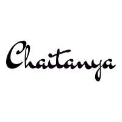
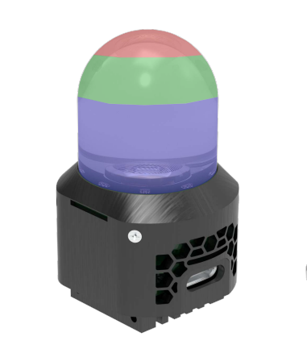
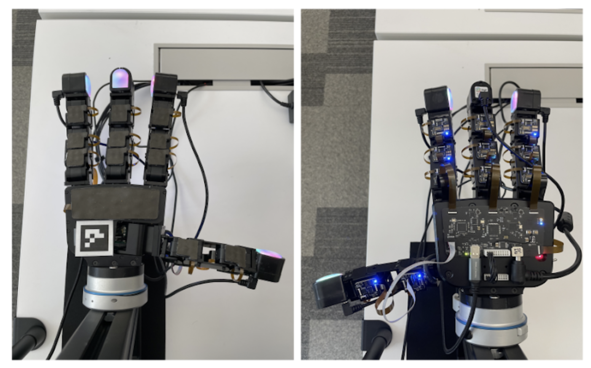
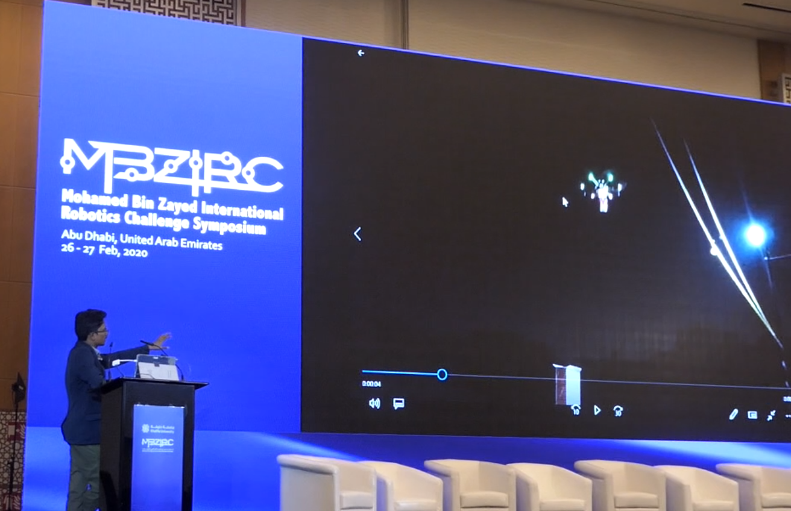

Chaithanya Krishna Bodduluri
I'm a roboticist at Meta, currently with the Agios team (since 2026). From 2023–2025 I was with FAIR, where my work sat at the intersection of robot learning, foundation models (LLM / VLM / VLA), tactile sensing, and dexterous manipulation.
Previously I was a researcher at the TCS Robotics & Drones Incubation Lab, where I built perception and navigation stacks for autonomous UAVs and contributed to the MBZIRC 2020 challenge. I enjoy taking robotics problems from a whiteboard sketch all the way to a working system — sensors, code, math, and a healthy amount of duct tape.
Email / Google Scholar / GitHub / LinkedIn / AprilTag Generator
News
- 2026 Dexterity from Smart Lenses accepted at ICRA 2026.
- 2025 Tactile Beyond Pixels accepted at CoRL 2025.
- 2025 Geometric Retargeting accepted at IROS 2025.
- 2025 Released DexterityGen, a foundation controller for dexterous manipulation.
- 2025 Released Sparsh-Skin: self-supervised perception for tactile-skin covered dexterous hands.
- 2024 Released Sparsh: self-supervised touch representations for vision-based tactile sensing.
- 2021 Paper on bifurcated gain adaptation in sliding-mode control presented at ACC 2021.
Research & Projects

Digit 360
A modular, high-resolution (~8.3 million taxel) tactile fingertip that captures multi-modal touch signals (force, vibration, audio, proximity, thermal) and processes them on-device. Co-developed at Meta FAIR with GelSight Inc. Lambeta, Wu, Sengül, Most, Black, Sawyer, Mercado, Qi, Bodduluri, …, Calandra (2024).

Meta Digit Plexus
An open hardware-software platform that standardises how tactile sensors (Digit, Digit 360, ReSkin) and end-effectors integrate onto a robot hand. Provides a single-cable hand-to-host interface for fingertips, fingers, and palm sensors, with Python and ROS 2 control. Partnered with Wonik Robotics on a next-gen Allegro Hand.

GeoRT — Geometric Retargeting
A principled, ultrafast neural algorithm for retargeting human hand mocap to dexterous robot hands. Trains in 1–2 minutes and deploys in a few lines of Python. Published at IROS 2025 (paper).
AprilTag Generator
A small browser tool to generate AprilTag 2 and AprilTag 3 markers of any family and size, ready to print or save as SVG. Useful when you need fiducials in a hurry for a robotics demo.

MBZIRC 2020 — Autonomous Wall Building with a Swarm of UAVs
Designed the system architecture and coding stack for a swarm of drones that autonomously picked, transported, and placed bricks to build a wall. Implemented perception, localization, and computer-vision pipelines for Challenge 2 of the Mohamed Bin Zayed International Robotics Challenge.

MBZIRC Symposium — Abu Dhabi
Presented our work on autonomous brick-wall construction using collaborative UAVs at the MBZIRC 2020 symposium.
Publications
Dexterity from Smart Lenses: Multi-Fingered Robot Manipulation with In-the-Wild Human Demonstrations
IEEE International Conference on Robotics and Automation (ICRA), 2026. [arXiv]
Sparsh-Skin: Self-Supervised Perception for Tactile Skin Covered Dexterous Hands
arXiv:2505.11420, 2025. [arXiv]
Tactile Beyond Pixels: Multisensory Touch Representations for Robot Manipulation
Conference on Robot Learning (CoRL), 2025. [paper]
Geometric Retargeting: A Principled, Ultrafast Neural Hand Retargeting Algorithm
IEEE/RSJ International Conference on Intelligent Robots and Systems (IROS), 2025. [paper]
DexterityGen: Foundation Controller for Unprecedented Dexterity
arXiv:2502.04307, 2025. [arXiv]
Sparsh: Self-Supervised Touch Representations for Vision-Based Tactile Sensing
arXiv:2410.24090, 2024. [arXiv]
PARA-FM: Graphical User Interface for Emergency Flood Planning and Management
5th World Congress on Disaster Management, Vol. II, pp. 100–106, 2022. [chapter]
A Bifurcated Gain Adaptation Strategy in Sliding Mode Control with Chattering Alleviation for High Fidelity Operations
American Control Conference (ACC), pp. 2139–2144, 2021. [paper]
Experience
- 2026 – present Meta — Agios. Robotics for the next generation of AI products.
- 2023 – 2025 Meta — FAIR (Fundamental AI Research). Robot learning, tactile sensing, foundation models for dexterous manipulation. Burlingame, USA.
- 2018 – 2022 TCS Research — Robotics Lab. Perception and navigation for UAV swarms; MBZIRC 2020.
- 2017 – 2018 TCS Research — Drones Incubation Lab. Industrial robotics applications and field deployments.
- 2016 – 2017 Tata Consultancy Services. Initial Learning Program; IBM Mainframe development.
- 2012 – 2016 B.Tech, Electronics & Communication Engineering. Class representative; organized workshops on UAVs and VR.